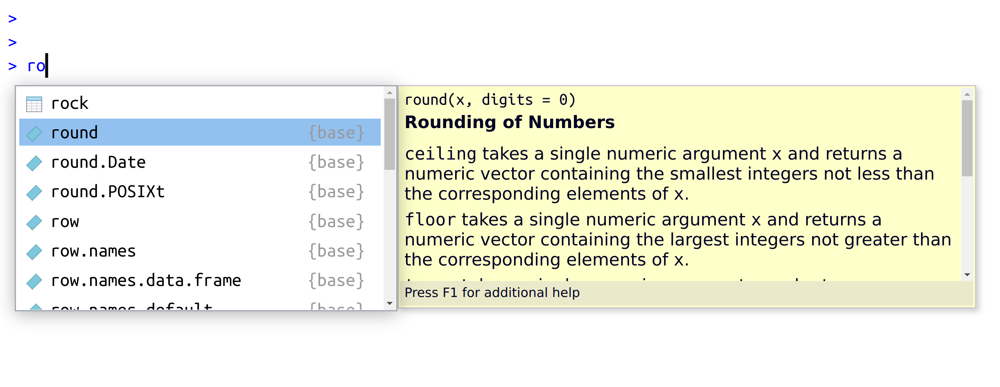
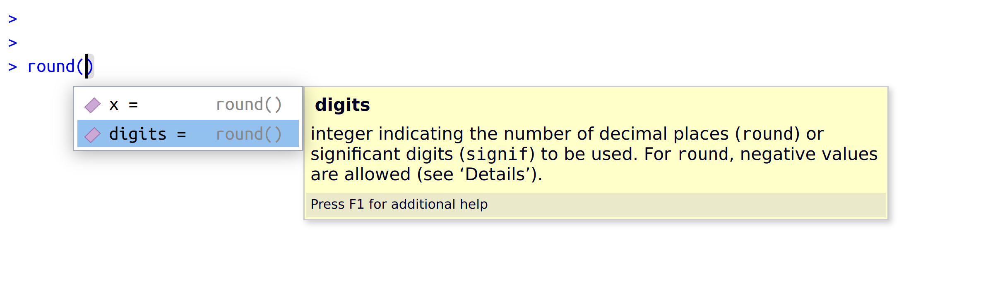
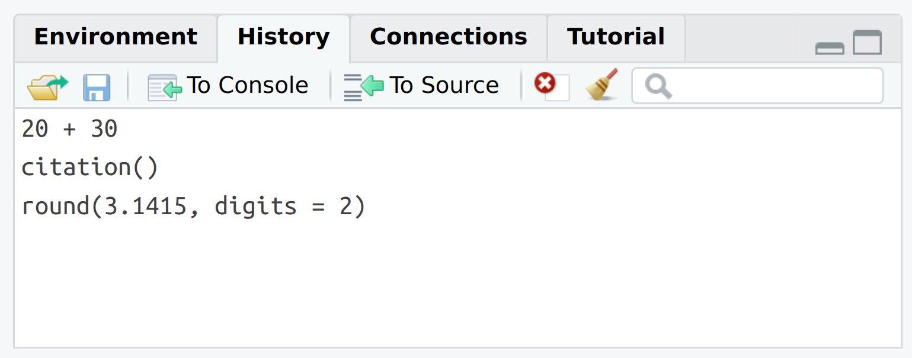

10 + 20[1] 30You are, I’m sorry to inform you, reading the work-in-progress revision of “Learning Statistics with R”. This chapter is currently a mess, and I don’t recommend reading it.
Where we left off at the end of the last chapter we’d just finished installing R (and probably RStudio too), and I’d introduced you to the command prompt. Most likely, you have R open at the moment and you’re looking at a console that looks like this…
>… and has a flashing cursor next to it. We’re ready to start using R.
Our goal in this chapter is not to learn any statistical concepts: we’re just trying to learn the basics of how R works and get comfortable interacting with the system. To do this, we’ll spend a bit of time using R as a simple calculator, since that’s the easiest thing to do with R. In doing so, you’ll get a bit of a feel for what it’s like to work in R. From there I’ll introduce some very basic programming ideas: in particular, I’ll talk about the idea of defining variables to store information, and a few things that you can do with these variables.
One of the easiest things you can do with R is use it as a simple calculator, so it’s a good place to start. For instance, try typing 10 + 20, and hitting enter.1 When you do this, you’ve entered a command, and R will “execute” that command. What you see on screen now will be this:
> 10 + 20
[1] 30Not a lot of surprises in this extract. But there’s a few things worth talking about, even with such a simple example. Firstly, it’s important that you understand how to read the extract. In this example, what I typed was the 10 + 20 part. I didn’t type the > symbol: that’s just the R command prompt and isn’t part of the actual command. And neither did I type the [1] 30 part. That’s what R printed out in response to my command. Secondly, it’s important to understand how the output is formatted. Obviously, the correct answer to the sum 10 + 20 is 30, and not surprisingly R has printed that out as part of its response. But it’s also printed out this [1] part, which probably doesn’t make a lot of sense to you right now. You’re going to see that a lot. I’ll talk about what this means in a bit more detail later on, but for now you can think of [1] 30 as if R were saying “the answer to the 1st question you asked is 30”. That’s not quite the truth, but it’s close enough for now. And in any case it’s not really very interesting at the moment: we only asked R to calculate one thing, so obviously there’s only one answer printed on the screen. Later on this will change, and the [1] part will start to make a bit more sense. For now, I just don’t want you to get confused or concerned by it.
Now that I’ve taught you these rules I’m going to change them pretty much immediately. That is because I want you to be able to copy code from the book directly into R if if you want to test things or conduct your own analyses. However, if you copy this code directly into R you will get an error. So instead I’ll show code and output like this:
10 + 20[1] 30The section shaded in grey is the R command, and the text underneath is the output. Displaying the code like this makes it easier to copy and past from the book into the R console.
Before we go on to talk about other types of calculations that we can do with R, there’s a few other things I want to point out. The first thing is that, while R is good software, it’s still software. It’s pretty stupid, and because it’s stupid it can’t handle typos. It takes it on faith that you meant to type exactly what you did type.
For example, suppose that you forgot to hit the shift key when trying to type +, and as a result your command ended up being 10 = 20 rather than 10 + 20. Here’s what happens:
10 = 20Error in 10 = 20: invalid (do_set) left-hand side to assignmentWhat’s happened here is that R has attempted to interpret 10 = 20 as a command, and churns out an error message because the command doesn’t make any sense to it. When a human looks at this, and then looks down at their keyboard and sees that + and = are on the same key, it’s pretty obvious that the command was a typo.
But R doesn’t know this, so it gets upset.
And, if you look at it from its perspective, this makes sense. All that R “knows” is that 10 is a legitimate number, 20 is a legitimate number, and = is a legitimate part of the language too. In other words, from its perspective this really does look like the user meant to type 10 = 20, since all the individual parts of that statement are legitimate and it’s too stupid to realise that this is probably a typo. Therefore, R takes it on faith that this is exactly what you meant… it only “discovers” that the command is nonsense when it tries to follow your instructions, typo and all. And then it complains, and out comes an error message.
Even more subtle is the fact that some typos won’t produce errors at all, because they happen to correspond to “well-formed” R commands. For instance, suppose that not only did I forget to hit the shift key when trying to type 10 + 20, I also managed to press the key next to one I meant do. The resulting typo would produce the command 10 - 20. Clearly, R has no way of knowing that you meant to add 20 to 10, not subtract 20 from 10, so what happens this time is this:
10 - 20[1] -10In this case, R produces the right answer, but to the the wrong question.
To some extent, I’m stating the obvious here, but it’s important. The people who wrote R are smart. You, the user, are smart. But R itself is not. And because it isn’t smart, it has to be mindlessly obedient. It does exactly what you ask it to do. There is no equivalent to autocorrect in R. When doing advanced stuff – and even the simplest of statistics is pretty advanced in a lot of ways – it’s dangerous to let a mindless automaton like R try to overrule the human user. But because of this, it’s your responsibility to be careful. Always make sure you type exactly what you mean. When dealing with computers, it’s not enough to type “approximately” the right thing. In general, you absolutely must be precise in what you say to R … it is too stupid to be anything other than absurdly literal in its interpretation.
Of course, now that I’ve been so uptight about the importance of always being precise, I should point out that there are some exceptions. Or, more accurately, there are some situations in which R does show a bit more flexibility than my previous description suggests. The first thing R is smart enough to do is ignore redundant spacing. What I mean by this is that, when I typed 10 + 20 before, I could equally have done this
10 + 20[1] 30or this
10+20[1] 30and I would get exactly the same answer. However, that doesn’t mean that you can insert spaces in any old place.
For example, the message that prints out when you open R mentions that that you can type citation() to get some information about how to cite R. If I do so…
citation()To cite R in publications use:
R Core Team (2023). _R: A Language and Environment for Statistical
Computing_. R Foundation for Statistical Computing, Vienna, Austria.
<https://www.R-project.org/>.
A BibTeX entry for LaTeX users is
@Manual{,
title = {R: A Language and Environment for Statistical Computing},
author = {{R Core Team}},
organization = {R Foundation for Statistical Computing},
address = {Vienna, Austria},
year = {2023},
url = {https://www.R-project.org/},
}
We have invested a lot of time and effort in creating R, please cite it
when using it for data analysis. See also 'citation("pkgname")' for
citing R packages.… it tells me to cite the R manual.
Let’s see what happens when I try changing the spacing. If I insert spaces in between the word and the parentheses, or inside the parentheses themselves, then all is well. That is, either of these two commands
citation ()citation( )will produce exactly the same response. However, what I can’t do is insert spaces in the middle of the word. If I try to do this, R gets upset:
citat ion()Error: <text>:1:7: unexpected symbol
1: citat ion
^Throughout this book I’ll vary the way I use spacing a little bit, just to give you a feel for the different ways in which spacing can be used. I’ll try not to do it too much though, since it’s generally considered to be good practice to be consistent in how you format your commands.
One more thing I should point out. If you hit enter in a situation where it’s “obvious” to R that you haven’t actually finished typing the command, R is just smart enough to keep waiting. For example, if you type 10 + and then press enter, even R is smart enough to realise that you probably wanted to type in another number. So here’s what happens (for illustrative purposes I’m breaking my own code formatting rules in this section):
> 10+
+ and there’s a blinking cursor next to the plus sign. What this means is that R is still waiting for you to finish. It “thinks” you’re still typing your command, so it hasn’t tried to execute it yet. In other words, this plus sign is actually another command prompt. It’s different from the usual one (i.e., the > symbol) to remind you that R is going to “add” whatever you type now to what you typed last time. For example, if I then go on to type 3 and hit enter, what I get is this:
> 10 +
+ 20
[1] 30And as far as R is concerned, this is exactly the same as if you had typed 10 + 20. Similarly, consider the citation() command that we talked about in the previous section. Suppose you hit enter after typing citation(. Once again, R is smart enough to realise that there must be more coming – since you need to add the ) character – so it waits. I can even hit enter several times and it will keep waiting:
> citation(
+
+
+ )I’ll make use of this a lot in this book. A lot of the commands that we’ll have to type are pretty long, and they’re visually a bit easier to read if I break it up over several lines. If you start doing this yourself, you’ll eventually get yourself in trouble (it happens to us all). Maybe you start typing a command, and then you realise you’ve screwed up. For example,
> citblation(
+
+ You’d probably prefer R not to try running this command, right? If you want to get out of this situation, just hit the ‘escape’ key.2 R will return you to the normal command prompt (i.e. >) without attempting to execute the botched command.
That being said, it’s not often the case that R is smart enough to tell that there’s more coming. For instance, in the same way that I can’t add a space in the middle of a word, I can’t hit enter in the middle of a word either. If I hit enter after typing citat I get an error, because R thinks I’m interested in an “object” called citat and can’t find it:
> citat
Error: object 'citat' not foundWhat about if I typed citation and hit enter? In this case we get something very odd, something that we definitely don’t want, at least not at this stage. Switching back to my usual way of writing R commands, here’s what happens:
citationfunction (package = "base", lib.loc = NULL, auto = NULL)
{
if (!is.null(auto) && !is.logical(auto) && !anyNA(match(c("Package",
"Version", "Title"), names(meta <- as.list(auto)))) &&
!all(is.na(match(c("Authors@R", "Author"), names(meta))))) {
auto_was_meta <- TRUE
package <- meta$Package
}
else {
auto_was_meta <- FALSE
BLAH BLAH BLAHwhere the BLAH BLAH BLAH goes on for rather a long time, and you don’t know enough R yet to understand what all this gibberish actually means. Of course, it doesn’t actually say BLAH BLAH BLAH: it says some other things we don’t understand or need to know.
This incomprehensible output can be quite intimidating to novice users, and unfortunately it’s very easy to forget to type the parentheses; so almost certainly you’ll do this by accident. Do not panic when this happens. Simply ignore the gibberish. As you become more experienced this gibberish will start to make sense, and you’ll find it quite handy to print this stuff out.3 But for now just try to remember to add the parentheses when typing your commands.
[TODO: use citation() instead of round()]
There’s two more fairly important things that you need to understand about how functions work in R, and that’s the use of “named” arguments, and default values” for arguments. Not surprisingly, that’s not to say that this is the last we’ll hear about how functions work, but they are the last things we desperately need to discuss in order to get you started. To understand what these two concepts are all about, I’ll introduce another function. The round() function can be used to round some value to the nearest whole number. For example, I could type this:
round(3.1415)[1] 3Pretty straightforward, really. However, suppose I only wanted to round it to two decimal places: that is, I want to get 3.14 as the output. The round() function supports this, by allowing you to input a second argument to the function that specifies the number of decimal places that you want to round the number to. In other words, I could do this:
round(3.14165, 2)[1] 3.14What’s happening here is that I’ve specified two arguments: the first argument is the number that needs to be rounded (i.e., 3.1415), the second argument is the number of decimal places that it should be rounded to (i.e., 2), and the two arguments are separated by a comma. In this simple example, it’s quite easy to remember which one argument comes first and which one comes second, but for more complicated functions this is not easy. Fortunately, most R functions make use of argument names. For the round() function, for example the number that needs to be rounded is specified using the x argument, and the number of decimal points that you want it rounded to is specified using the digits argument. Because we have these names available to us, we can specify the arguments to the function by name. We do so like this:
round(x = 3.1415, digits = 2)[1] 3.14Notice that this is kind of similar in spirit to variable assignment (Section 5.1), except that I used = here, rather than <-. In both cases we’re specifying values to be associated with a label. However, there are some differences between what I was doing earlier on when creating variables, and what I’m doing here when specifying arguments, and so as a consequence it’s important that you use = in this context.
As you can see, specifying the arguments by name involves a lot more typing, but it’s also a lot easier to read. Because of this, the commands in this book will usually specify arguments by name,4 since that makes it clearer to you what I’m doing. However, one important thing to note is that when specifying the arguments using their names, it doesn’t matter what order you type them in. But if you don’t use the argument names, then you have to input the arguments in the correct order. In other words, these three commands all produce the same output…
round(3.14165, 2)
round(x = 3.1415, digits = 2)
round(digits = 2, x = 3.1415)[1] 3.14
[1] 3.14
[1] 3.14but this one does not…
round(2, 3.14165)[1] 2Okay, so that’s the first thing I said you’d need to know: argument names. The second thing you need to know about is default values. Notice that the first time I called the round() function I didn’t actually specify the digits argument at all, and yet R somehow knew that this meant it should round to the nearest whole number. How did that happen? The answer is that the digits argument has a default value of 0, meaning that if you decide not to specify a value for digits then R will act as if you had typed digits = 0. This is quite handy: the vast majority of the time when you want to round a number you want to round it to the nearest whole number, and it would be pretty annoying to have to specify the digits argument every single time. On the other hand, sometimes you actually do want to round to something other than the nearest whole number, and it would be even more annoying if R didn’t allow this! Thus, by having digits = 0 as the default value, we get the best of both worlds.
Time for a bit of a digression. At this stage you know how to type in basic commands, including how to use R functions. And it’s probably beginning to dawn on you that there are a lot of R functions, all of which have their own arguments. You’re probably also worried that you’re going to have to remember all of them! Thankfully, it’s not that bad. In fact, very few data analysts bother to try to remember all the commands. What they really do is use tricks to make their lives easier. The first (and arguably most important one) is to use the internet. If you don’t know how a particular R function works, Google it. There’s a lot of information out there!
The first thing I want to call your attention to is the autocomplete ability in RStudio.5
Let’s stick to our example above and assume that what you want to do is to round a number. This time around, start typing the name of the function that you want, and then hit the “tab” key. RStudio will then display a little window like the one shown in the screenshot below. What you’re seeing here is what happens when I type the letters ro at the command line, and then hit tab

The window has two panels. On the left, there’s a list of variables and functions that start with the letters that I’ve typed shown in black text, and some grey text that tells you where that variable/function is stored. Ignore the grey text for now: it won’t make much sense to you until we’ve talked about packages in ?sec-packageinstall.
As you can see from the screenshot, there’s quite a few things that start with the letters ro: there’s something called rock, something called round, something called round.Date and so on. The one we want is round, but if you’re typing this yourself you’ll notice that when you hit the tab key the window pops up with the top entry (i.e., rock) highlighted. You can use the up and down arrow keys to select the one that you want. Or, if none of the options look right to you, you can hit the escape key (“esc”) or the left arrow key to make the window go away.
In our case, the thing we want is the round option, so we’ll select that. When you do this, you’ll see that the panel on the right changes. Previously, it had been telling us something about the rock data set (i.e., “Measurements on 48 rock samples…”) that is distributed as part of R. But when we select round, it displays information about the round() function, exactly as it is shown in the screenshot.
This display is really handy. The very first thing it says is round(x, digits = 0): what this is telling you is that the round() function has two arguments. The first argument is called x, and it doesn’t have a default value. The second argument is digits, and it has a default value of 0. In a lot of situations, that’s all the information you need. But RStudio goes a bit further, and provides some additional information about the function underneath. Sometimes that additional information is very helpful, sometimes it’s not: RStudio pulls that text from the R help documentation, and my experience is that the helpfulness of that documentation varies wildly. Anyway, if you’ve decided that round() is the function that you want to use, you can hit the right arrow or the enter key, and RStudio will finish typing the rest of the function name for you.
The autocomplete tool works slightly differently if you’ve already got the name of the function typed and you’re now trying to type the arguments. For instance, suppose I’ve typed round( into the console, and then I hit tab. RStudio is smart enough to recognise that I already know the name of the function that I want, because I’ve already typed it! Instead, it figures that what I’m interested in is the arguments to that function. So that’s what pops up in the little window:

Again, the window has two panels, and you can interact with this window using arrow keys. On the left hand panel, you can see a list of the argument names. On the right hand side, it displays some information about what the selected argument does.
One thing that R does automatically is keep track of your “command history”. That is, it remembers all the commands that you’ve previously typed. You can access this history in a few different ways. The simplest way is to use the up and down arrow keys. If you hit the up key, the R console will show you the most recent command that you’ve typed. Hit it again, and it will show you the command before that. If you want the text on the screen to go away, hit escape6 Using the up and down keys can be really handy if you’ve typed a long command that had one typo in it. Rather than having to type it all again from scratch, you can use the up key to bring up the command and fix it.
The second way to get access to your command history is to look at the history panel in RStudio. On the upper right hand side of the RStudio window you’ll see a tab labelled “History”. Click on that, and you’ll see a list of all your recent commands displayed in that panel: it should look something like Figure @ref(fig:RStudiohistory). If you double click on one of the commands, it will be copied to the R console. (You can achieve the same result by selecting the command you want with the mouse and then clicking the “To Console” button).7

Seriously. If you’re in a position to do so, open up R and start typing. The simple act of typing it rather than “just reading” makes a big difference. It makes the concepts more concrete, and it ties the abstract ideas (programming and statistics) to the actual context in which you need to use them. Statistics is something you do, not just something you read about in a textbook.↩︎
If you’re running R from the terminal rather than from RStudio, escape doesn’t work: use CTRL-C instead.↩︎
For advanced users: yes, as you’ve probably guessed, R is printing out the source code for the function.↩︎
The two functions discussed previously, sqrt() and abs(), both only have a single argument, x. So I could have typed something like sqrt(x = 225) or abs(x = -13) earlier. The fact that all these functions use x as the name of the argument that corresponds the “main” variable that you’re working with is no coincidence. That’s a fairly widely used convention. Quite often, the writers of R functions will try to use conventional names like this to make your life easier. Or at least that’s the theory. In practice it doesn’t always work as well as you’d hope.↩︎
For advanced users: this isn’t just an RStudio thing. If you’re running R in a terminal window, tab autocomplete still works, and does so in exactly the way you’d expect. It’s not as visually pretty as the RStudio version and lacks some of the cooler features that RStudio provides. I don’t bother to document that here: my assumption is that if you are running R in the terminal then you’re already familiar with using tab autocomplete.↩︎
Incidentally, that always works: if you’ve started typing a command and you want to clear it and start again, hit escape.↩︎
Another method is to start typing some text and then hit the Control key and the up arrow together (on Windows or Linux) or the Command key and the up arrow together (on a Mac). This will bring up a window showing all your recent commands that started with the same text as what you’ve currently typed. That can come in quite handy sometimes.↩︎
Notice that I used print(keeper) rather than just typing keeper. Later on in the text I’ll sometimes use the print() function to display things because I think it helps make clear what I’m doing, but in practice people rarely do this.↩︎
3.4 Using comments
Before discussing any of the more complicated stuff, I want to introduce the comment character,
#. It has a simple meaning: it tells R to ignore everything else you’ve written on this line. You won’t have much need of the#character immediately, but it’s very useful later on when writing scripts (see Chapter @ref(scripting)). However, while you don’t need to use it, I want to be able to include comments in my R extracts. For instance, if you read this:8it’s a lot easier to understand what I’m doing than if I just write this:
You might have already noticed that the code extracts in Chapter @ref(introR) included the
#character, but from now on, you’ll start seeing#characters appearing in the extracts, with some human-readable explanatory remarks next to them. These are still perfectly legitimate commands, since R knows that it should ignore the#character and everything after it. But hopefully they’ll help make things a little easier to understand.